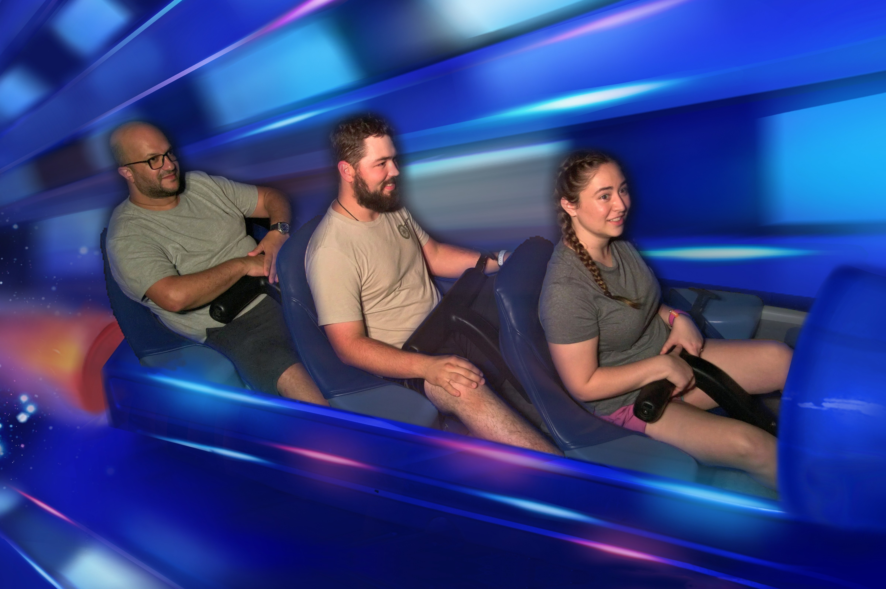

Curriculo
Boas experiências em suporte técnico remoto e presencial a usuário, instalação de programas em geral e troubleshooting no Windows.
Conhecimentos em redes, TCP/IP, DNS, DHCP, e etc.
Experiência em suporte técnico remoto com sistema ERP de Postos de Gasolina.
Boa comunicação, tanto oral quanto escrita.
Facilidade em relacionamento com colegas de trabalho e em socializar no ambiente de trabalho.
Facilidade em aprendizado em processos e habilidades novas.
Noção básica de inglês
Começando estudos em programação na área de front-end. Já tive contato com programação na facudaldade de Redes de Computadores, então já entendo o básico
de HTML e CSS.
Pretendo me aprofundar na área de front-end e áudio visual.
Experiências
- Vieira comercio e distribuiçao de jornais e revistas LTDA
Estudos
- hotec - tecnologia em gastronomia
- Alura - front end
